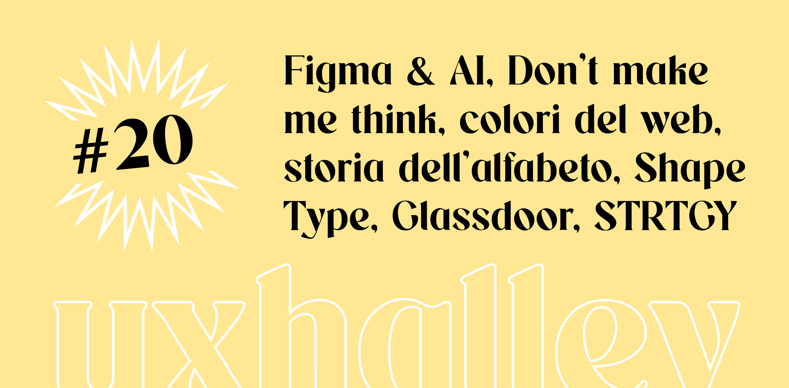

UX Halley, newsletter per designer
uxhalley, edizione #20
03 luglio 2023 — UX Halley: una newsletter bisettimanale che raccoglie news e links utili sulla UX. Le regole sono semplici: max 5 minuti di lettura; se ti interessa, lo approfondisci; se ti piace, lo condividi; a prescindere ci vediamo tra due settimane. Facile facile.
Immagine di copertina dell'edizione di UX Halley, newsetter per designer
Link per designer suggerito nell'edizione di UX Halley, newsletter per designer
news di figma
In questi giorni, dopo la Config, la conferenza annuale di #figma, si parla solo delle ultime news: #devmode, #variables, #prototyping. Ma la cosa più importante, l'innovazione più interessante, riguarda l'#ai.
Link per designer suggerito nell'edizione di UX Halley, newsletter per designer
l'alfabeto
Sinceramente fino a che non ho visto questo articolo, non mi stavo facendo questa domanda, ma dopo... ü§Ø √à interessantissimo scoprire da dove provengono i segni delle lettere che ogni giorno usiamo!
Link per designer suggerito nell'edizione di UX Halley, newsletter per designer
statistiche e colori
Quali sono i colori più usati nel web? Quali colori usano i big della tecnologia e di internet? Questo articolo raccoglie una ricerca e una analisi statistica sul colore veramente interessante.
Link per designer suggerito nell'edizione di UX Halley, newsletter per designer
don't make me think
Ci sono due tipi di persone: coloro che non fanno #ricerca, e che questo libro lo devono divorare, e coloro che fanno già ricerca (per fortuna!) e che questo libro lo possono leggere con piacere per un ripassino, che non fa mai male.
Link per designer suggerito nell'edizione di UX Halley, newsletter per designer
strtgy
Se ti interessa leggere a proposito di #businessstrategy, #okr, #customerexperience e altri temi legati a prodotto digitale, processi e dati, questa è la newsletter che non devi perderti assolutamente.
Link per designer suggerito nell'edizione di UX Halley, newsletter per designer
glassdoor
Stai cercando lavoro? Questo strumento è molto utile per te. In Italia non è molto usato, ma si tratta di una sorta di Tripadvisor delle aziende, in cui è possibile leggere recensioni di (ex) dipendenti, per uno sguardo all'interno.
Link per designer suggerito nell'edizione di UX Halley, newsletter per designer
shape type
Quanto ne sai delle curve di bezier e della tipografia? Questo gioco metterà a dura prova il tuo occhio grafico, per tracciare linee di #lettering e passare 5 minuti, o 5 ore, di distrazione. Fammi sapere come va!